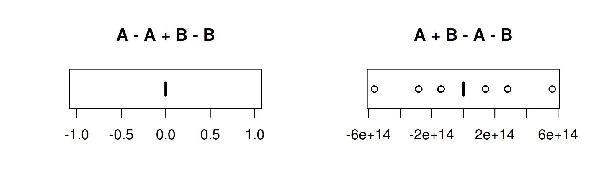
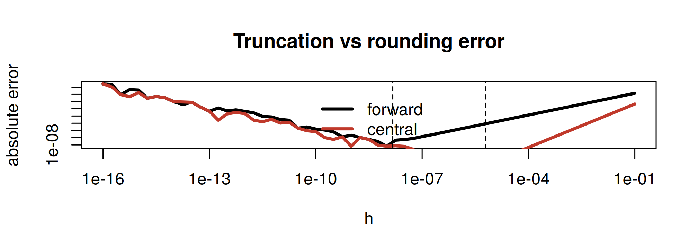
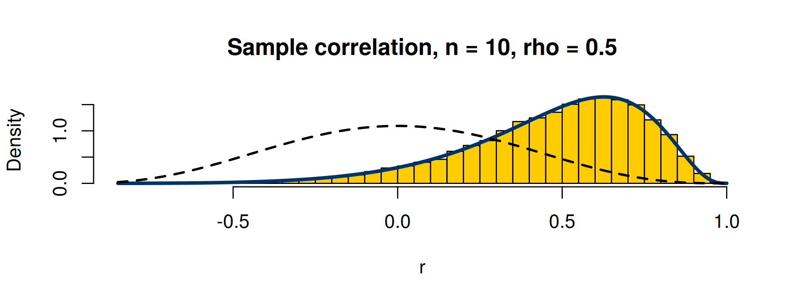
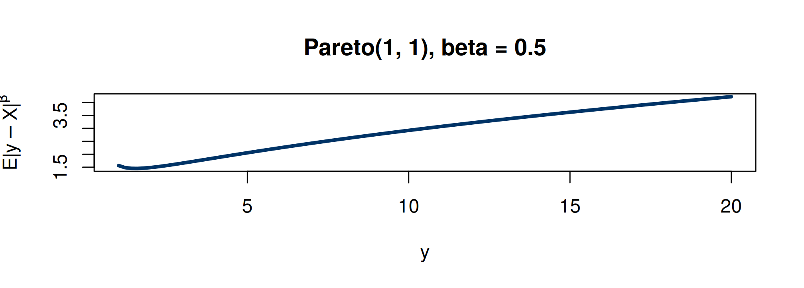

1 == 1[1] TRUE3 - 2 == 1[1] TRUE0.3 - 0.2 == 0.1[1] FALSE0.4 - 0.2 == 0.2[1] TRUEMATH 4750 / MSSC 5750 Computational Statistics
Marquette University
MATH 4750 - Spring 2027
[1] 2.22e-16[1] 2.22e-16[1] FALSE[1] TRUE[1] 1.798e+308[1] 2.225e-308[1] Inf 0 all_equal exactly_zero max_abs_error
0.000e+00 8.730e+02 5.629e+14 
\[ S^2 = \frac{1}{n-1}\sum(x_i-\bar x)^2 \quad\text{vs.}\quad S^2 = \frac{\sum x_i^2 - n\bar x^2}{n-1} \]
var two_pass textbook_one_pass
0.9781 0.9781 0.0000 The “computational formula” from intro statistics is numerically unstable. Use two-pass or Welford’s online algorithm (our R6 example in the OOP lecture).
[1] TRUE[1] "Mean relative difference: 0.5"[1] FALSE[1] FALSE TRUE FALSE FALSE[1] FALSE[1] TRUEidentical() in if/while conditions; isTRUE(all.equal(...)) for numerical near-equality (tolerance \(\approx 1.5\times10^{-8}\)).Evaluate \(\dfrac{\Gamma((n-1)/2)}{\Gamma(1/2)\Gamma((n-2)/2)}\) for \(n = 400\):
[1] NaN[1] 7.954Work on the log scale: lgamma, lchoose, lfactorial, log1p, expm1, dnorm(..., log = TRUE), pnorm(..., log.p = TRUE), and the log-sum-exp trick: \(\log\sum e^{a_i} = m + \log\sum e^{a_i - m}\), \(m = \max a_i\).
\(\sin x = \sum_{k=0}^n\frac{(-1)^k}{(2k+1)!}x^{2k+1}\). Compare a loop with a vectorized polynomial:
series sin
0.5 0.5 user system elapsed
0.128 0.000 0.132 user system elapsed
0.044 0.000 0.047 naive range_reduced sin
0.9129 0.9129 0.9129 Forward difference \(\frac{f(x+h) - f(x)}{h}\) has truncation error \(O(h)\) and rounding error \(O(\epsilon/h)\): the best \(h\approx\sqrt\epsilon\). Central differences: \(O(h^2)\), best \(h\approx\epsilon^{1/3}\).
f <- function(x) exp(x); x0 <- 1; h <- 10^seq(-16, -1, by = .25)
fwd <- abs((f(x0 + h) - f(x0)) / h - exp(1))
ctr <- abs((f(x0 + h) - f(x0 - h)) / (2 * h) - exp(1))
plot(h, fwd, log = "xy", type = "l", lwd = 3, ylab = "absolute error", main = "Truncation vs rounding error")
lines(h, ctr, lwd = 3, col = "#C0392B"); abline(v = c(sqrt(.Machine$double.eps), .Machine$double.eps^(1/3)), lty = 2)
legend("bottom", c("forward", "central"), col = c(1, "#C0392B"), lwd = 3, bty = "n")
\(\zeta(a) = \sum_{i\ge1}i^{-a}\), \(a > 1\), and \(\zeta'(a) = -\sum_{i\ge1}\frac{\log i}{i^a}\). Summing the series directly converges slowly; the book uses a Laurent expansion with Stieltjes constants. A simple check:
zeta <- function(a, N = 1e6) { i <- 1:N; sum(i^-a) + N^(1 - a) / (a - 1) } # tail correction
dzeta_series <- function(a, N = 1e6) { i <- 1:N; -sum(log(i) * i^-a) - N^(1 - a) * (log(N) / (a - 1) + 1 / (a - 1)^2) }
a <- 2; h <- 1e-4
c(series = dzeta_series(a), central_difference = (zeta(a + h) - zeta(a - h)) / (2 * h), known = -0.9375482543) series central_difference known
-0.9375 -0.9375 -0.9375 If \(f\) is continuous on \([a,b]\) and \(f(a)f(b) < 0\), a root lies in \((a,b)\). Halve the interval each step: error after \(k\) steps \(\le (b-a)/2^k\) (linear convergence).
Example 13.6. Solve \(a^2 + y^2 + \dfrac{2ay}{n-1} = n-2\) for \(y\), with \(a = 0.5\), \(n = 20\). Exact: \(y = -\dfrac{a}{n-1}\pm\sqrt{n-2-a^2+\left(\dfrac{a}{n-1}\right)^2}\) (the 2nd edition prints \(+a^2\) under the root, a typo).
f <- function(y, a, n) a^2 + y^2 + 2 * a * y / (n - 1) - (n - 2)
a <- 0.5; n <- 20
b0 <- 0; b1 <- 5* n; it <- 0; eps <- .Machine$double.eps^0.25
y <- seq(b0, b1, length = 100)
r <- c(b0, b1); f0 <- f(b0, a, n); f1 <- f(b1, a, n)
while (it < 1000 && abs(r[2] - r[1]) > eps) {
it <- it + 1; mid <- mean(r); fm <- f(mid, a, n)
if (fm == 0) { r <- c(mid, mid); break }
if (f0 * fm < 0) { r[2] <- mid; f1 <- fm } else { r[1] <- mid; f0 <- fm }
}
c(root = mean(r), iterations = it, exact = -a / (n - 1) + sqrt(n - 2 - a^2 + (a / (n - 1))^2)) root iterations exact
4.187 20.000 4.187 unirootBrent’s method combines bisection, the secant method, and inverse quadratic interpolation: guaranteed and fast.
root f.root iter estim.prec
4.187e+00 2.381e-04 1.400e+01 6.104e-05 Newton-Raphson: \(x_{k+1} = x_k - f(x_k)/f'(x_k)\), quadratic convergence near the root but no guarantee.
integrate()Adaptive Gauss-Kronrod quadrature (QUADPACK). Handles infinite limits by transformation.
Example 13.8.
0.95 with absolute error < 1e-111 with absolute error < 9.4e-050.5 with absolute error < 4.7e-05integrate must receive a vectorized integrand, and can be fooled by narrow peaks: integrate(dnorm, 0, 20000) claims about 0!
trap <- function(f, a, b, m) { x <- seq(a, b, length = m + 1); h <- (b - a) / m; h * (sum(f(x)) - (f(a) + f(b)) / 2) }
simpson <- function(f, a, b, m) { # m even
x <- seq(a, b, length = m + 1); h <- (b - a) / m
h / 3 * (f(a) + f(b) + 4 * sum(f(x[seq(2, m, 2)])) + 2 * sum(f(x[seq(3, m - 1, 2)])))
}
g <- function(x) exp(-x) / (1 + x^2); exact <- integrate(g, 0, 1, rel.tol = 1e-12)$value
sapply(c(4, 16, 64), function(m) c(m = m, trapezoid_err = trap(g, 0, 1, m) - exact, simpson_err = simpson(g, 0, 1, m) - exact)) [,1] [,2] [,3]
m 4.0000000 1.600e+01 6.400e+01
trapezoid_err 0.0033273 2.059e-04 1.286e-05
simpson_err -0.0001636 -5.374e-07 -2.083e-09For bivariate normal data with correlation \(\rho\), the density of \(r\) is
\[ f(r) = \frac{(n-2)(1-\rho^2)^{(n-1)/2}(1-r^2)^{(n-4)/2}}{\pi}\int_0^\infty\frac{dw}{(\cosh w - \rho r)^{n-1}},\quad -1<r<1. \]
.dcorr <- function(r, N, rho = 0) {
if (abs(r) > 1 || abs(rho) > 1) return(0)
if (N < 4) return(NA)
if (isTRUE(all.equal(rho, 0.0))) {
a <- exp(lgamma((N - 1) / 2) - lgamma((N - 2) / 2))
return(a * (1 - r^2)^((N - 4) / 2) / sqrt(pi))
}
f <- function(w, R, N, rho) (cosh(w) - rho * R)^(1 - N) # integrand
i <- integrate(f, lower = 0, upper = Inf, R = r, N = N, rho = rho)$value
c1 <- (N - 2) * (1 - rho^2)^((N - 1) / 2)
c2 <- (1 - r^2)^((N - 4) / 2) / pi
c1 * c2 * i
}
dcorr <- function(r, N, rho = 0) sapply(r, .dcorr, N = N, rho = rho)
integrate(dcorr, -1, 1, N = 10, rho = 0.5)$value # a proper density?[1] 1set.seed(4750); N <- 10; rho <- 0.5
rs <- replicate(20000, cor(MASS::mvrnorm(N, c(0, 0), matrix(c(1, rho, rho, 1), 2)))[1, 2])
hist(rs, prob = TRUE, breaks = 60, col = "#FFCC00", main = "Sample correlation, n = 10, rho = 0.5", xlab = "r")
curve(dcorr(x, N = N, rho = rho), add = TRUE, lwd = 3, col = "#003366", n = 200)
curve(dcorr(x, N = N, rho = 0), add = TRUE, lwd = 2, lty = 2, n = 200)
\(Y_1, Y_2\stackrel{\text{iid}}{\sim}\text{Exp}(\theta)\): \(\ell(\theta) = 2\log\theta - \theta(y_1+y_2)\), \(\hat\theta = 2/(y_1+y_2)\).
Maximum likelihood estimation
Call:
mle(minuslogl = mlogL)
Coefficients:
Estimate Std. Error
theta 3.665 2.592
-2 log L: -1.195 closed_form
3.665 [1] 3.665\(X\sim\text{Pareto}(\sigma, \alpha = 1)\), \(\bar F(x) = (\sigma/x)^\alpha\), \(x\ge\sigma\). For \(y>\sigma\) and \(0<\beta<1\), evaluate \(\mathrm{E}|y - X|^\beta\) (it arises in energy goodness-of-fit tests).
f1 <- function(x, y, s, a, b) (abs(y - x))^b * a * s^a / x^(a + 1) # the integrand |y-x|^b f(x)
g1 <- function(y, s, a, b) { # E|y-X|^b by numerical integration
if (y < s) return(NA)
integrate(f1, lower = s, upper = y, y = y, s = s, a = a, b = b)$value +
integrate(f1, lower = y, upper = Inf, y = y, s = s, a = a, b = b)$value
}
sapply(c(1.5, 2, 5, 10), g1, s = 1, a = 1, b = .5)[1] 1.452 1.487 2.057 2.922[1] 1.446 1.481 2.050 2.915
== (use isTRUE(all.equal())), avoid subtracting nearly equal numbers, work on the log scale.uniroot (both).integrate() (vectorize the integrand, beware of peaks), trapezoid/Simpson, Monte Carlo in high dimensions.optimize() (1-d), stats4::mle(), optim() (next lecture).